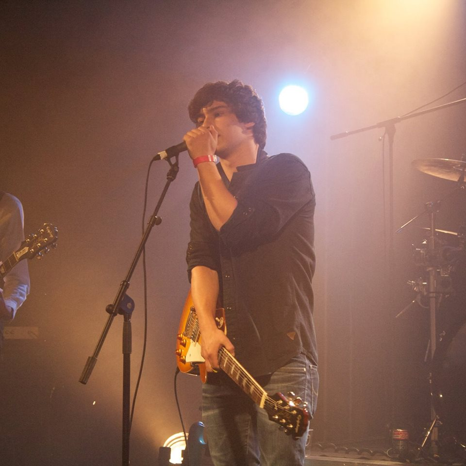
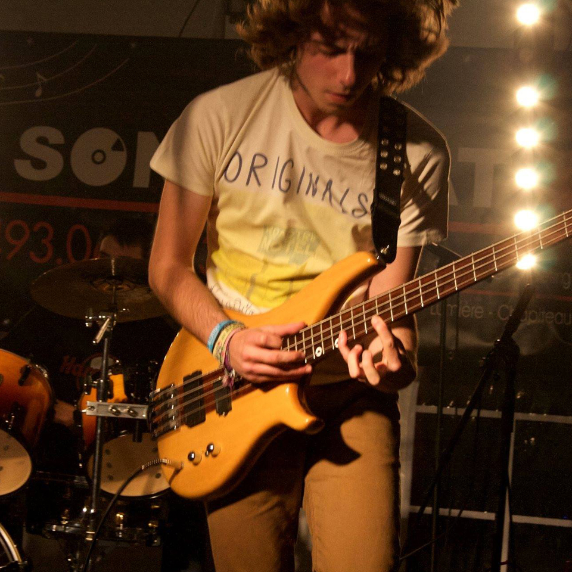

Le groupe
Description du groupe
Biographie de Simon
Simon est au conservatoire de Huy depuis 9 ans. Il y suit les cours de percussions comme David. Il partcipe aussi à l’Harmonie Royale Concorde Saint-Martin d'Antheit et au cours d’improvisation musical avec Alain Pierre. Il assure le tempo pour l’ensemble du groupe et est toujours prêt à improviser un moment solo lors des changements de guitare ou problème technique lors des concerts.
Biographie de David
David débute la musique par du piano à l’âge de 6 ans en cours privé, puis passe au conservatoire de Huy dès 7 ans. Il y apprend le solfège et les percussions qu’il vient de terminer en juin.il s’essaye à la guitare vers 13 ans en autodidacte, le chant viendra bien plus tard.Il écrit les textes et une partie des compos.Il démarre aujourd’hui un Master à l’Institut Supérieur de Musique et de Pédagogie ( IMEP ) à Namur en percussions et suit les cours de chant au conservatoire de Huy.
Biographie de Dimitri
Autodidacte dès l’âge de 13 ans, Dimitri crée son premier groupe « Shut Down » avec David. Ce sera leur première expérience de groupe. Dimitri commence des cours de guitare à l’Atelier Rock de Huy il y a 4 ans et y parfait son jeu et ses solos. Il retrouve David en octobre 2014 quand Sebastien quitte If I Call.
Biographie de Maxime
Maxime est à l’Académie d’Hannut où il termine son parcours de 10 ans de violoncelle.Ancien bassiste du groupe Pentagon ( groupe de rock/pop liégeois ). Il bouge, il saute, passe d’un coté à l’autre de la scène. Il a déjà une bonne expérience du live avec la demi-finale du concours Imagine avec son ancien groupe. Il apporte ses riffs et son énergie musicale.
